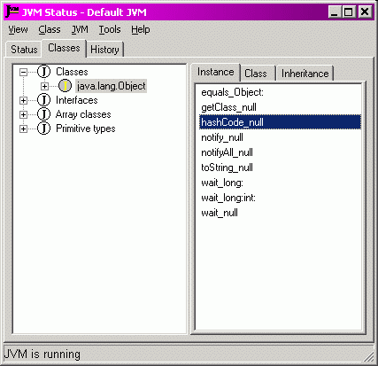

|
JNIPort for Dolphin Smalltalk |
|
|
Back to Goodies |
The Status Monitor's Classes PageThe Classes Page is a plug-in page for the Status Monitor. It displays all the classes and types that JNIPort currently knows about. It is essentially a tree view of the contents of the class registry.  The tree view should be pretty self-explanatory. When a class is selected the right hand panel will display any wrapper methods that JNIPort has generated automatically for that class. It also displays the inheritance structure of the Java class itself, the Smalltalk class that is used to wrap references to instances of that class, and the Smalltalk class of its class static. This page adds a 'Class' menu to the main menu (it is identical to the context menu in the tree view). Some of the options are discussed below. 'Class⇒Find Java class...' and 'Class⇒Find/Load Java class...' both allow you to search for a named class in the class tree. The difference is that one of them is restricted to searching through the already-loaded classes (but it is case-insensitive and allows wildcards, like the class search in Dolphin's CHB); the other will load a Java class if it is not already loaded, but that means that the name has to be specified completely and accurately.
'Class⇒Browse JavaDoc...' will attempt to find and open a web browser on the JavaDoc
documentation for the selected class. That uses a search path to find the JavaDoc files. The path
has a global components, which can be set with the 'Tools⇒Options⇒Global JavaDoc path...'
menu option; it should be set to a ;-separated list of folder names, where the folders are
the roots of JavaDoc file hierarchies (for instance, if you have installed the JDK's Java
documentation in 'Class⇒Generate instance-side wrappers...' and 'Class⇒Generate class-side wrappers...' launch the Wrapper Wizard to help generate wrapper methods for the selected Java class. |
Copyright © Chris Uppal, 2003-2005
Java, JNI (probably), JVM (possibly), and God knows what else, are trademarks of Sun Microsystems, Inc.